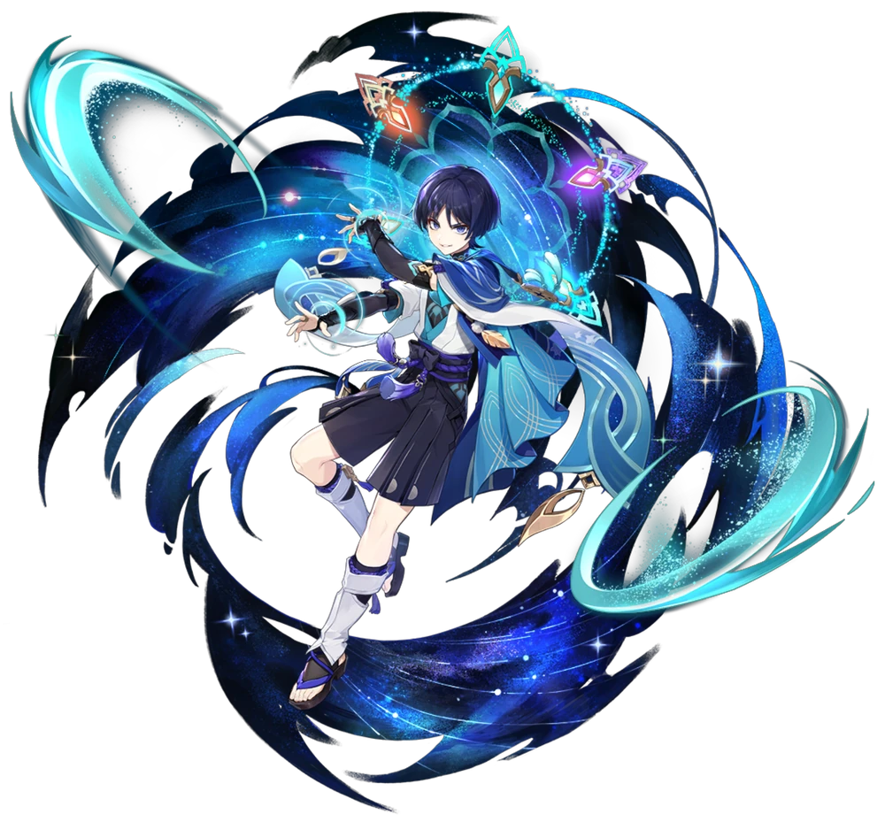
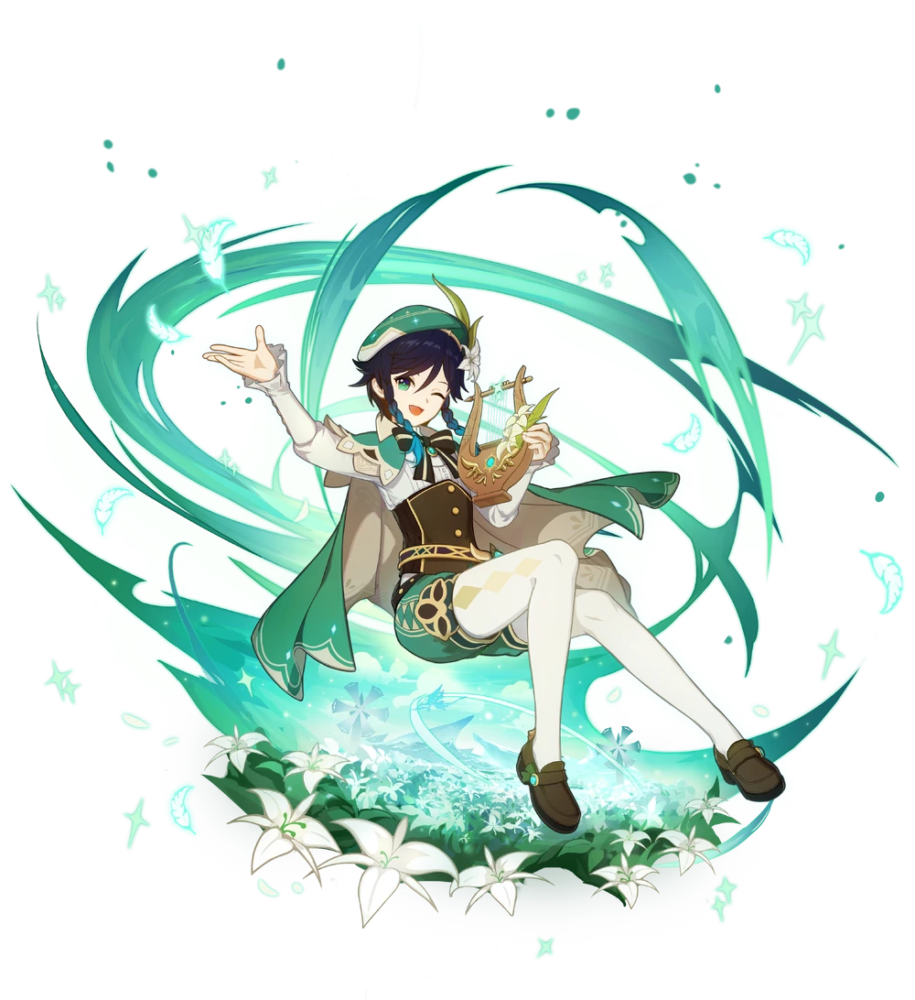
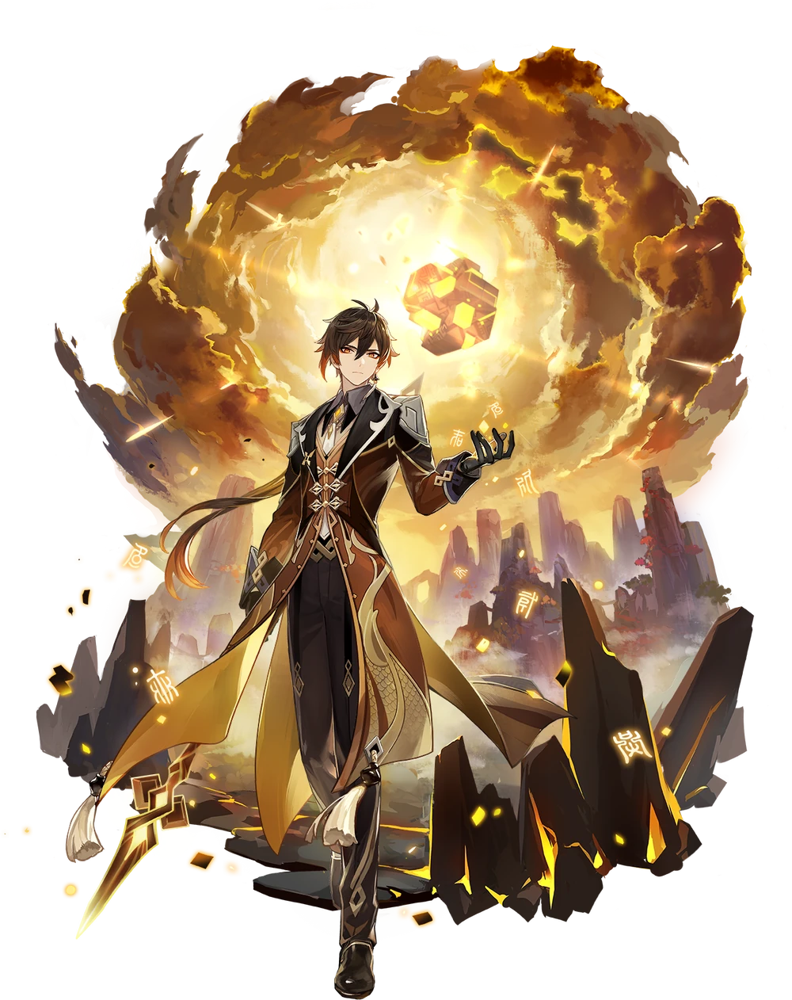
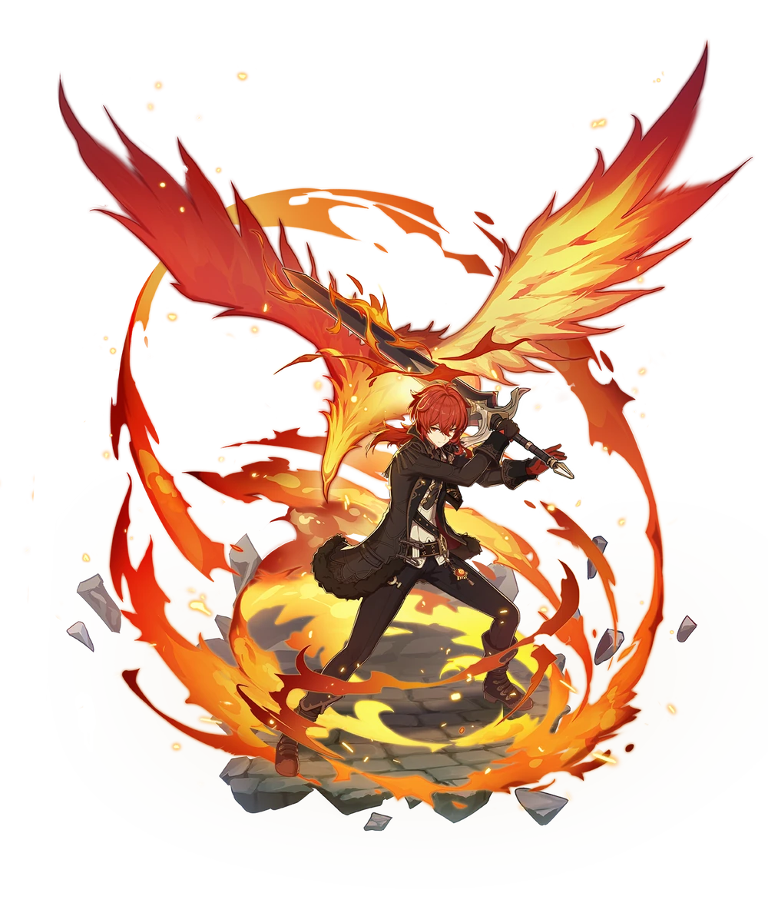
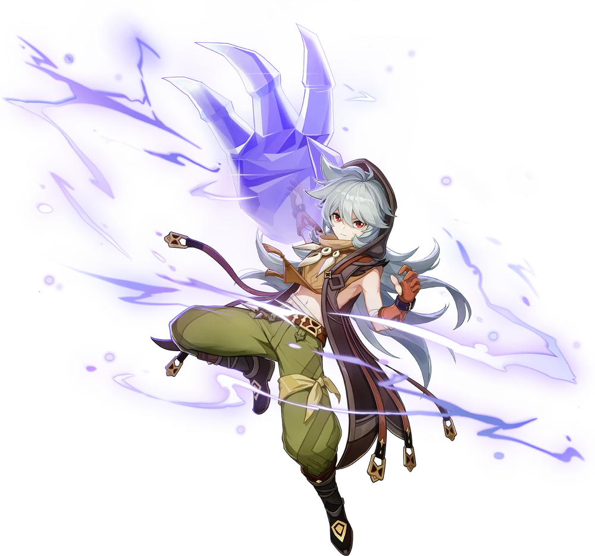
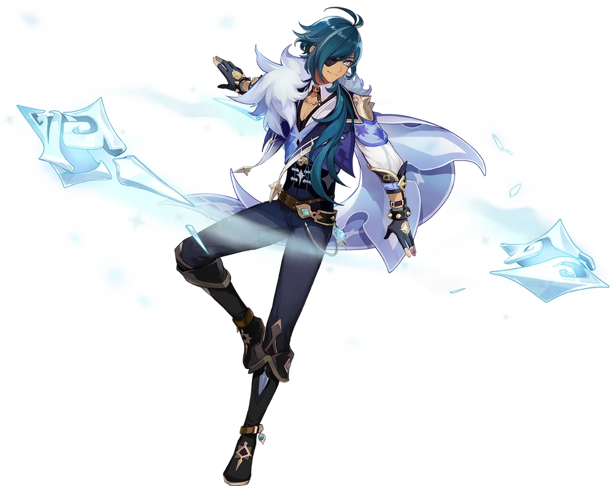

It may looked like it's a PC game. Since it became so popular, it became a mobile game.
| Characters | Images | Description |
|---|---|---|
| Wanderer |  | He is a puppet, made by the Raiden Ei. According to the Sumeru Archon Quest Chapter, he give us his backstory on how he became the Balladeer. During the Inversion of Genesis(Archon Quest Interlude Chapter: Act III), he discovered the truth behind the tragedy of Tatarasuna.
More Info about this character: Genshin Impact Wiki-Fandom.com |
| Venti |  | He sings ryhmes and drinks wine. He is also known as "Barbatos", the Anemo Archon. During his story quest, he was no form, rather a form of a sprit before the Archon War. He took his friend, (which is uncomfirmed of his name) after overthrowing a tyrant.
More Info about this character: Genshin Impact Wiki-Fandom.com |
| Zhongli |  | He drinks Osmanthus wine because it reminds him when he and his former Archon friends' memories. He is also the consultant of the Wangsheng Funeral Parlor. During the Liyue Archon Quest, it was revealed by Zhongli that he is Rex Lapis when he revealed his Geo Gnosis in his hands. He explained his faked death and everything that the Traveler seeks answers from him.
More Info about this character: Genshin Impact Wiki-Fandom.com |
| Diluc |  | He is the son of the previous Dawn Winery owner (aka Mr. Crepus). He doesn't like alcohol, but he likes grape juices. He resigned himself from the Knights of Favonius after Mr. Crepus was killed by the Ursa the Drake.
More Info about this character: Genshin Impact Wiki-Fandom.com |
| Razor |  | He was abandoned when he was an infant. He was taken-in by the Wolf of the North Boreas and raised by the wolf pack in Wolvendom. He spent his life with the wolf pack that he couldn't interact any humans. So, Lisa
More Info about this character: Genshin Impact Wiki-Fandom.com |
| Kaeya |  | He was a Khaenri'ahan, who travelled until Mondstat. His father (His name was uncomfirmed)abandoned Kaeya. He never told the truth about his origins; However, Diluc knows the truth about Kaeya at that night of the death of their father, (Mr. Crepus).
More Info about this character: Genshin Impact Wiki-Fandom.com |